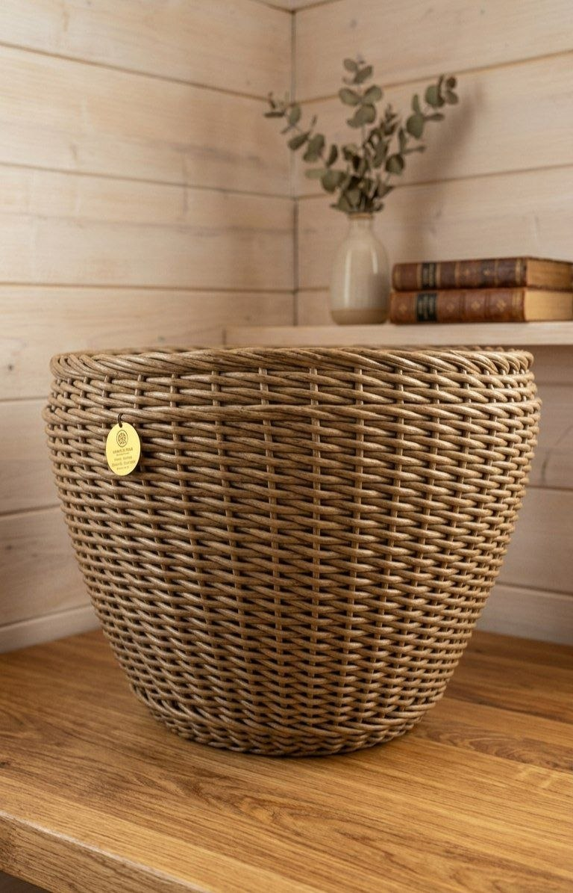
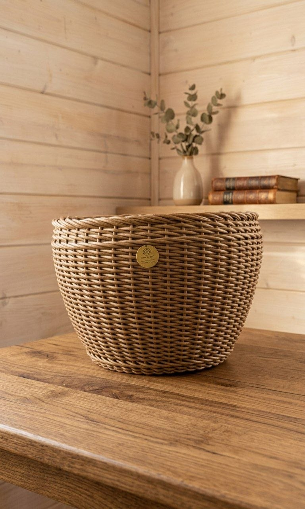

Вместительное кашпо объемом 45 литров. Это идеальная золотая середина для растений, которым уже тесно в стандартных горшках, но еще рано переезжать в гигантские вазоны. Плотное ручное плетение из эко-ротанга надежно защитит корневую систему и украсит ваш интерьер или сад.